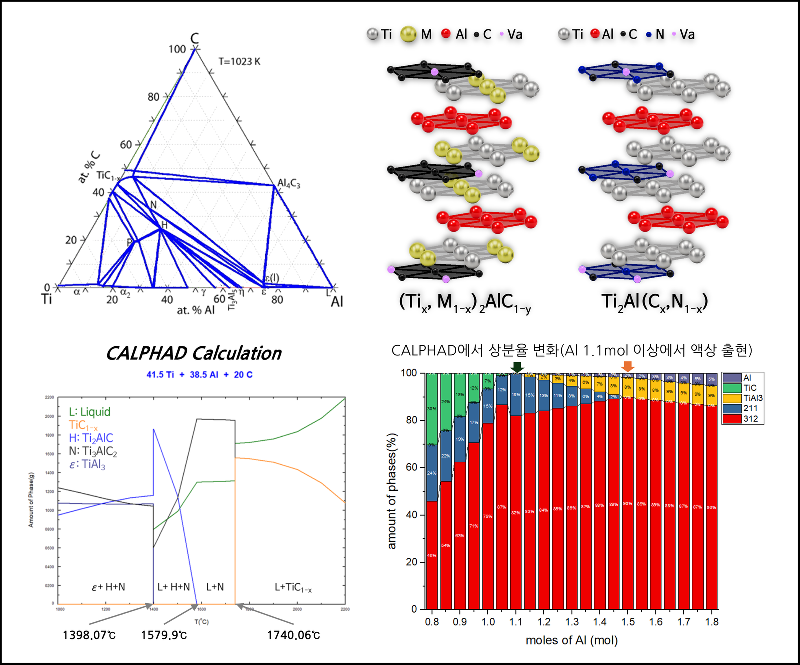

맥신(MXene)은 층상 세라믹인 맥스(MAX, Mₙ₊₁AXₙ) 상에서 A족 금속을 선택적으로 에칭해 얻는 전이금속 카바이드/나이트라이드 계열의 이차원 나노소재입니다. 조성(M, X)과 표면 종단기(Tₓ)를 조절해 물성을 폭넓게 설계할 수 있는 거의 유일한 이차원 플랫폼이지만, 지금까지 개발된 40여 종은 대부분 밴드갭이 없는 금속성 카바이드 맥신이어서 반도체성·자성 맥신은 사실상 보고되지 못했습니다. 근본 원인은 반도체성·자성을 발현할 질화물·이종금속 맥스 전구체의 신규 조성을 찾을 열역학 데이터베이스의 부재, 그리고 강한 M–A/M–X 결합 때문에 어려운 질화물 맥스의 선택적 에칭 공정 부재입니다. 본 과제는 열역학·재료공학·화학공정·반도체소자 전문가의 집단연구로 이 난제를 풀어, 조성·결함·도핑·밴드갭 조절 자유도를 갖는 이차원 반도체·자성체 제조 플랫폼을 구축합니다.
Project 01 · 기초연구실
맥신 플랫폼 구조를 이용한 이차원 반도체 및 자성체 개발 기초 연구실
2D Semiconductors & Magnetic Materials via the MXene Platform
새로운 맥스(MAX) 상을 개발하고 이를 맥신(MXene)으로 전환해, 반도체성·자성을 갖는 이차원 맥신 반도체·자성체를 구현하는 다학제 기초연구 과제입니다.

About
Overview
Goal
Objectives
맥신 구조(Mₙ₊₁XₙTₓ, n=1–4) 플랫폼을 이용한 이차원 반도체·자성체 제조 및 이종원소 도핑 원천 소재 기술과 반도체 소자 응용 기술 개발이 최종 목표입니다. 세부적으로 ① 신규 맥스(이종·질화물 맥스) 상 안정성 예측용 열역학 데이터베이스 구축, ② 고에너지 밀링·저온 탄질화 환원 공정 기반 이종·질화물 맥스 전구체 합성 및 결함 제어, ③ 산소도움 용융염 에칭법을 통한 질화물·이종금속 맥신의 선택적 합성과 표면화학 제어, ④ 맥신 반도체·자성체 기반 3단자 FET·시냅스·가스센서 등 뉴로모픽 소자 응용을 3개년에 걸쳐 수행합니다. (총 연구기간 2025.06–2028.05, 글로벌 기초연구실지원사업)
MID Lab
Our Role
MID는 열역학 계산과 기계학습을 기반으로 신규 맥스 물질의 상 안정성을 평가하고, 반도체·자성체 맥신용 맥스 물질을 스크리닝하는 역할을 맡습니다. 고온 열분석으로 맥스의 열역학 특성을 측정해 이종·질화물 맥스의 상 안정성을 예측하는 열역학 데이터베이스를 구축하고, 이를 바탕으로 합성 가능한 맥스 조성과 열처리·합성 조건을 설계합니다.
이를 통해 그동안 다수의 실험에 의존하던 신규 맥스 개발에 열역학 기반의 효율적인 소재·공정 설계 방향을 제시하고, 재료·화학공정 팀의 맥신 합성과 반도체소자 팀의 소자 응용으로 이어지는 개발 과정을 앞단에서 뒷받침합니다.
Scope
At a Glance
- Type
- 기초 연구 · 2025 글로벌 기초연구실지원사업 (3개년)
- Focus
- 조성·결함·도핑·밴드갭 조절 자유도를 갖는 이차원 반도체·자성체 제조 플랫폼
- Platform
- 맥스(MAX) 상 기반 맥신(MXene, Mₙ₊₁XₙTₓ, n=1–4) 구조 플랫폼
- Position
- 열역학 계산(CALPHAD)·기계학습 기반 맥스 상 안정성 평가 및 열역학 데이터베이스 구축